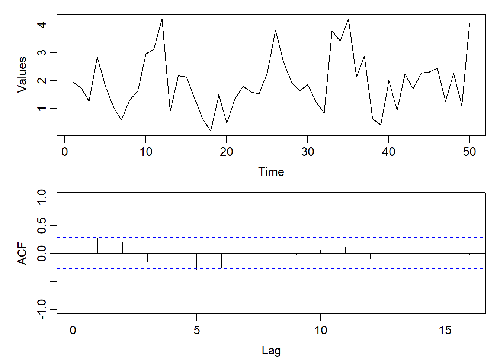

ex1 <- c(
1.954,1.747,1.265,2.850,1.799,1.046,0.592,1.303,1.639,2.969,
3.113,4.228,0.900,2.189,2.135,1.394,0.636,0.191,1.498,0.472,
1.346,1.797,1.601,1.525,2.281,3.826,2.662,1.935,1.630,1.863,
1.240,0.831,3.788,3.420,4.226,2.125,2.897,0.641,0.416,2.005,
0.928,2.236,1.717,2.279,2.312,2.445,1.262,2.266,1.110,4.077
)
par(mfrow=c(2,1), mar=c(3,4,1,1), mgp=c(2,0.6,0))
plot.ts(ex1,ylab = "Values")
acf(ex1,ylim=c(-1,1))